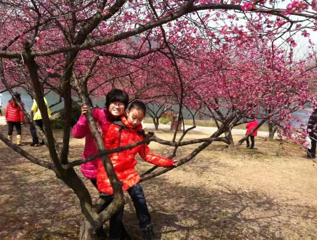
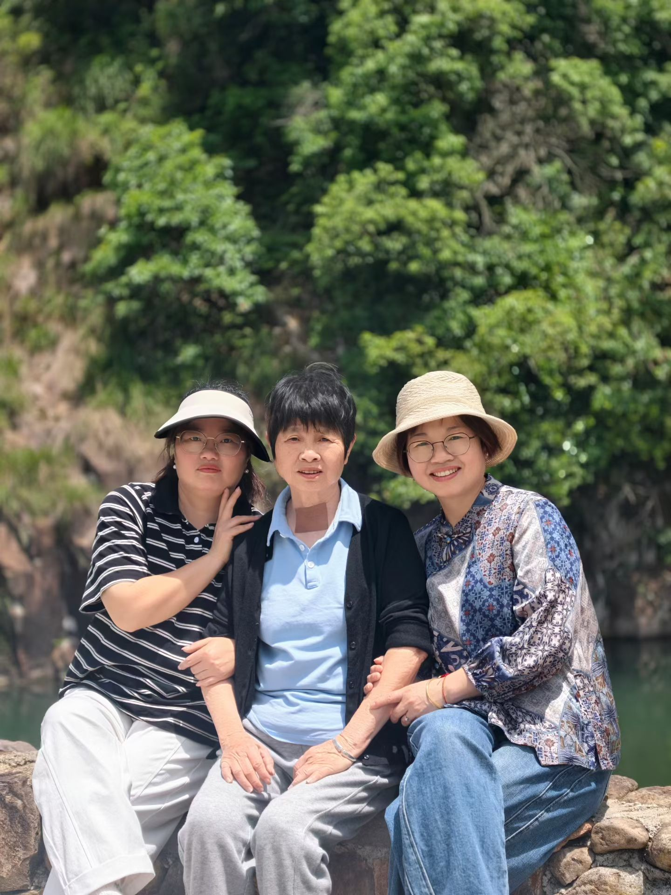
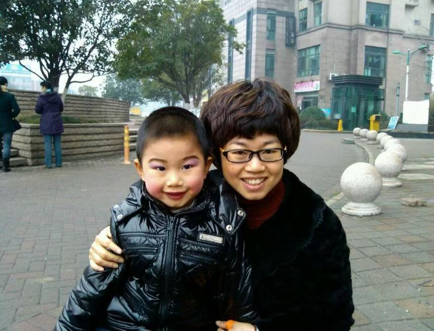
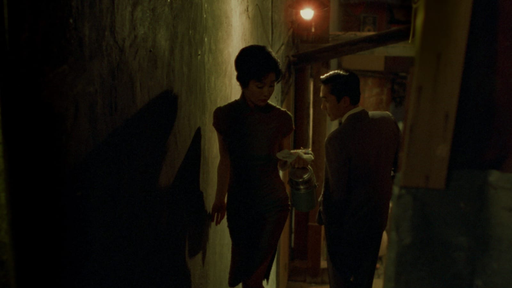

Growing up as a woman in China can mean being told who you should be before you have
had the chance to decide for yourself. In this project, I wanted to explore how social
expectations follow her through life, and how she finds room to make choices of her
own.
An interview project with my mother, my grandmother, and my two aunts.
In conversation with中文 / English translation
My mother
photo-02photo-03photo-04
What pressures and expectations do you face at home and at work these
days?
Right now, I suppose what the family needs from Mum is to take good care of you and Niuniu. Niuniu has his college entrance exams coming up, so I need to look after both his feelings and his health. And with you, Mum needs to pay special attention to how you’re doing. I don’t want you to get ill again.
At work, I need to help Dad run the factory well. Mum is responsible for the administration and HR, and Dad asks me to learn more about those things.
As for pressure, at home there are the older ones and the younger ones to look after. Sometimes the everyday responsibilities and the money side of things feel like a lot. At work, Mum spent so many years at home without working, and now I’m helping Dad manage the company. Sometimes I worry about making mistakes, and that puts a bit of pressure on me.
Overall, though, Mum is very happy with where I am and with life right now. You and Niuniu are both doing well, and Niuniu is working hard too. Especially you—you’re doing so well. You’re getting better and better now, and Mum feels so reassured.
What part of your day matters most to you?
The most important moment of the day? I don’t think there’s really one particular moment. If I had to say, back when I wasn’t working, it was taking the time to make a nice dinner and waiting for Dad, or for all of you when you were home, so we could sit down together and enjoy a happy meal. For Mum, that was the happiest and most important time.
Now that you’re in America, every time we have a video call is the most important moment for me. Seeing that you’re doing well is what makes Mum happiest.


Who and what matter most to you in your life?
The most important people in Mum’s life are you and Niuniu. Right now, you two matter most to me. The most important thing is to help Dad run the factory well and try to earn a bit more money for now.

If you could go back to your childhood or younger years, what would you do
differently?
What Mum most wants to do over is to go back to when you were little. I would raise you with care and let you grow up happy. I wouldn’t lose my temper with you like that. I wouldn’t let you go abroad to study, or let you go through so much hurt. Then you wouldn’t have got ill, wouldn’t have needed medication, and wouldn’t have had to work so hard to lose weight. That’s what Mum most wishes she could do over.
What pressures and expectations do you face at home and at work these days?
My grandmother
She describes her current family life as happy and says she feels little
pressure at this stage of her life.
My mother
She balances caring for her children and older family members with managing
administration and HR at the family factory. Financial responsibilities and fear
of making mistakes can feel demanding, but she is satisfied with her life and
reassured by her children’s progress.
My aunt 1
She feels no family pressure because she has only herself to look after. At work, she tries to do each task carefully and reliably, with as few mistakes as possible.
My aunt 2
What part of your day matters most to you?
My grandmother
For her, daily life centres on sharing meals with her husband and staying
healthy. Being well enough to care for themselves means their family has less
reason to worry.
My mother
Shared family dinners were once the most meaningful part of her day. With her
daughter now in America, their video calls have become especially important;
seeing her daughter well brings her the most happiness.
My aunt 1
She values having dinner and going for a walk with her family after a busy day. Later, she likes to relax in bed with a show.
My aunt 2
Who and what matter most to you in your life?
My grandmother
Her family, especially her granddaughter, matters most to her. She also values
good health and often thinks about her loved ones when she cannot sleep.
My mother
Her two children are the most important people in her life. Her immediate
priority is to help her husband run the factory successfully and improve the
family’s income.
My aunt 1
Family matters most to her. She sees good health as the foundation of life and hopes that she and her loved ones can live peacefully, healthy and safe.
My aunt 2
If you could go back to your childhood or younger years, what would you do
differently?
My grandmother
She regrets marrying her husband and leaving her home village. She remembers
her hometown fondly and describes life after moving to the flatlands as
exhausting because of the work she had to do.
My mother
She wishes she could return to her daughter’s childhood, raise her with greater
patience, and protect her from hurt. She regrets letting her study abroad and
believes that different choices might have spared her daughter illness,
medication, and the struggle to lose weight.
My aunt 1
If she could start again, she would study hard and stay in her first job rather than quitting. She would also be more patient and listen more to her elders.
My aunt 2
What they had to say
Marriage as a turning point.
A starting observation: women around me often look back on getting married as a
moment they regret. This section will explore what that regret means in each woman’s
own account.
In their own words.
Looking across the stories.
The things we take for granted
Being a good girl.
As a child, she may learn that being a “good girl” means not making a fuss. Praise for being considerate can make it harder to speak up when something feels unfair. Over time, she may start putting other people’s wishes ahead of her own.
Can she still be loved when she says no?
Being looked at.
As she grows up, comments about her appearance can change how she sees herself. Even deciding what to wear may become a way to avoid criticism. She may find it hard to tell whether she likes the way she looks or has simply learned what other people approve of.
Without those watching eyes, how would she see herself?
Choosing a direction.
Decisions about her future may look like her own, but they often depend on her family’s support. She may feel pressure to settle down by a certain age, even if she has other plans. Wanting something for herself can come with the worry that she is letting someone else down.
How many of these paths are ones she truly wants to take?
Making room for others.
Caring for her family can be something she enjoys. Over time, though, everyone may get used to her being available whenever they need her. She may keep putting off her own plans because there always seems to be something that needs doing at home.
After caring for everyone else, how much time does she have left for herself?
Later in life, she may cherish what she has and still remember the paths she did not take. Loving her family can exist alongside regret about a decision. The wishes she has put off do not necessarily become less important as she grows older.
If she could still make a choice for herself now, what would she choose?
Madame Tang and the two younger women in her household live within a web of family ties, personal interests, and power. Care and protection also involve making plans for one another’s lives. Each woman holds a different place in the family, with a different amount of room to choose.
When “it’s for your own good” becomes a reason to decide for someone else, the line between care and control can blur. A woman can depend deeply on her family while slowly learning to set her own wishes aside.
Who gets to decide how she lives?
Raise the Red Lantern
1991 · Zhang Yimou · China / Hong Kong
After her father’s death, Songlian leaves school and becomes the fourth concubine in a wealthy household. The lanterns in the courtyard determine who receives attention and who enjoys special treatment. She must learn how attention is distributed in this family, and how to secure a place for herself within it.
When a secure life depends on someone else’s favor, pleasing them can become a way to survive. The competition between the women also reveals the limits they share. She can try to have the lanterns lit outside her room, but she has little say in the rules that decide it.
If she stops waiting to be chosen, where else can she go?
In the Mood for Love

2000 · Wong Kar Wai · Hong Kong
Su Li-zhen and Chow Mo-wan gradually grow close after discovering their spouses’ affair. Her feelings emerge through repeated encounters, pauses, and unfinished conversations. For a married woman, acknowledging her own desires also means facing how others might see her.
She must make sense of what she feels amid expectations about respectability, fidelity, and how she ought to behave. Some words remain unspoken because she is still uncertain. Others may stay unsaid because saying them would carry too great a cost.
Can she acknowledge her feelings without first having to justify them?
“It’s for your own good” is a familiar phrase at home. It can come from genuine concern and still
leave little room for what someone wants. Listening again to my mother and
grandmother, I find myself noticing the arrangements everyone seems to take for
granted: who is expected to be understanding, who should give way, and who is
responsible for keeping the family happy. The expectations they once lived with
may later find their way into the advice they give their daughters. Love and
expectation are often passed down together, in the things we say every day.
When she says “it’s for your own good,” what is she most afraid of? +
Before she became a mother, was the same expected of her?
When she and her family want different things, who gives way first?
Raise the Red Lantern
The lanterns make me think of the standards that rarely need to be said out loud. A woman is often
judged by how well she looks after her family, or how little trouble she causes.
When I hear these women talk about marriage, work, or leaving home, I wonder which
choices were really open to them. Looking back, a decision can sound like
something “she chose for herself.” At the time, though, keeping her family’s
support, making ends meet, or not letting someone down may have felt more urgent
than what she wanted.
Was what she wanted the same as what others wanted for her? +
What might she have lost by choosing differently?
Was there room for her to live on her own terms, beyond winning approval?
In the Mood for Love
Some feelings take a long time to put into words. When my grandmother speaks about regretting her
marriage, or my mother wishes she could go back to my childhood, I don’t hear a
simple answer. A woman can love her family and still have regrets about the life
she has lived. I want to make more room for those feelings, without rushing to
tell her to move on or expecting her story to end neatly. The pauses, the things
she repeats, and the sentences she leaves unfinished deserve to be heard too.
Are there things she feels a wife or mother shouldn’t say? +
When she speaks about regret, are we listening, or rushing to reassure her?
What else might she say if she didn’t have to put other people’s feelings first?
Things we grew up hearing
Care
She cares for her family, but over time her help becomes something everyone
expects. Few ask whether she’s tired or what she had planned for herself.
When she’s tired, who looks after her?
Duty
She’s learned to put her family first.
Even when she needs a break, saying no can feel selfish.
Does putting herself first once in a while make her feel guilty?
Success
From school and work to marriage and children, there always seems to be another
expectation to meet. Even when others think she has it all, she may still wonder
what else she might have done.
Leaving aside what others think, does she like the life she has?
Freedom
She might want to change jobs, leave a relationship, or just have an afternoon
to herself. She loves her family, but she wants room to make her own choices
without having to explain herself every time.
Can she say “This is what I want” without immediately having to give a reason everyone else will accept?
The conversation continues.
A question to take with you
Who were you before I knew you?
What part of your day belongs to you?
What did you want to become?
What would you like me to understand?
What would make life easier now?
What would you choose next?
About these interviews
These interviews share the stories of women in my family. They look back on the
choices they’ve made and how they feel about their lives now. Their experiences don’t
speak for all Chinese women, but they offer a glimpse into different lives within one
family.
My mother and aunts wrote their answers in Chinese, which were then translated into
English. My grandmother’s interview was edited and translated, and I used the context
to fill in parts that were unclear. The summaries bring together the main points, while
the longer answers try to keep the way they naturally speak.
A photograph and a few answers can only tell part of someone’s story. There is always
more beyond the frame.